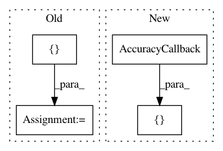

3b2a90ad9bcebe6ef004da614f2ecd2d1e29fdb1,imagenet.py,,main,#,10
Before Change
optimizer = optim.SGD(lr=0.6 / 1024 * args.batch_size, momentum=0.9, weight_decay=1e-4)
scheduler = lr_scheduler.MultiStepLR([50, 70])
c = [callbacks.AccuracyCallback(), callbacks.LossCallback()]
r = reporters.TQDMReporter(range(args.epochs), callbacks=c)
tb = reporters.TensorboardReporter(c)
rep = callbacks.CallbackList(r, tb, callbacks.WeightSave("checkpoints"))
if args.distributed:
// DistributedSupervisedTrainer sets up torch.distributed
if args.local_rank == 0:
print("\nuse DistributedDataParallel")
trainer = DistributedSupervisedTrainer(model, optimizer, F.cross_entropy, callbacks=rep, scheduler=scheduler,
init_method=args.init_method, backend=args.backend)
else:
multi_gpus = torch.cuda.device_count() > 1
if multi_gpus:
print("\nuse DataParallel")
trainer = SupervisedTrainer(model, optimizer, F.cross_entropy, callbacks=rep,
scheduler=scheduler, data_parallel=multi_gpus)
// if distributed, need to setup loaders after DistributedSupervisedTrainer
train_loader, test_loader = imagenet_loaders(args.root, args.batch_size, distributed=args.distributed,
num_train_samples=args.batch_size * 10 if args.debug else None,
num_test_samples=args.batch_size * 10 if args.debug else None)
After Change
num_train_samples=args.batch_size * 10 if args.debug else None,
num_test_samples=args.batch_size * 10 if args.debug else None)
c = [callbacks.AccuracyCallback(), callbacks.AccuracyCallback(k=5),
callbacks.LossCallback(),
callbacks.WeightSave("."),
reporters.TensorboardReporter("."),
reporters.TQDMReporter(range(args.epochs))]
with SupervisedTrainer(model, optimizer, F.cross_entropy,
callbacks=c,
scheduler=scheduler,
In pattern: SUPERPATTERN
Frequency: 3
Non-data size: 4
Instances
Project Name: moskomule/senet.pytorch
Commit Name: 3b2a90ad9bcebe6ef004da614f2ecd2d1e29fdb1
Time: 2019-12-14
Author: hataya@keio.jp
File Name: imagenet.py
Class Name:
Method Name: main
Project Name: Scitator/catalyst
Commit Name: 2775c15702fd52f081ff8fded51f4f38877659df
Time: 2019-08-01
Author: scitator@gmail.com
File Name: examples/_tests_scripts/z_classification.py
Class Name:
Method Name: